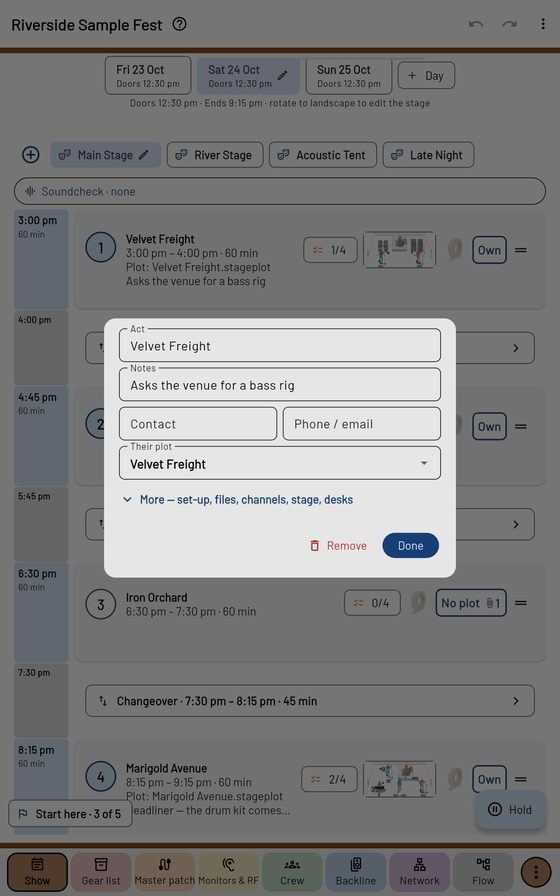

The Show page

Days and stages
The day chips sit under the show's name; + Day adds one, tap the day on show to change its date and doors. The stage chips are below: + adds a stage. A stage that doesn't play on the day you picked is greyed "not on Sat"; tap it to go to its first day.
The running order
The time bar on the left draws each act as tall as its set, changeovers in grey and a red line at the time now. Tap an act's block to change its set length, a grey block to change the changeover (− / + 5 min). Hold an act's time to move it — the first act sets the show's start. Drag the ☰ handle to reorder.
Each act row shows its times, its notes, a small picture of its plot, the ticks of its advance (1/4), its spike tape colour and its channel chip — Patch (on the house's lines) or Own (their own numbers). A paperclip means the band sent files: tap it to open them.
Adding acts
⊕ → Add act: from My plots, from a file (their plot, a PDF rider, a photo), from a schedule (paste the promoter's running order, or a photo, PDF or web page of it), or with no plot yet.
An act's window

Name, notes, their plot, and under More: their own set-up, Load their file… / Read it with my AI…, Their notes: Read into a plot for a rider typed into the notes, Channel numbers (Master patch or Their own), Stage (House stage or Their stage), Backline match (Exact, Close, Any) and their own guest desks.
On the night
- Hold (bottom right) holds doors or the next act; letting go moves everything after it.
- Running late sits under the times: everything after slides by what you give it.
- The soundcheck bar at the top runs the line checks and soundchecks before doors.